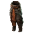
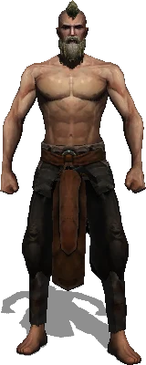

Открыть в интерактивной вики →

| Требуемый уровень | 55 |
|---|---|
| Редкость | Психорар |
| Улучшения | звёзды, орбы, осколки |
| Тип | Штаны |
| Цена | 950 000 |
| Ремонт | 380к |
| Заряды | 3000 |
| Вместимость дрифов | 10 |
| Требуемое знание | 55 |
| Мощь | 4 |
| Знание | 20 |
| Здоровье | 140 |
| Мана | 110 |
| Сопр. рубящим | 25 |
| Сопр. дробящим | 25 |
| Сопр. колющим | 25 |